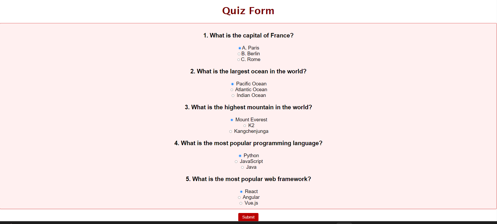
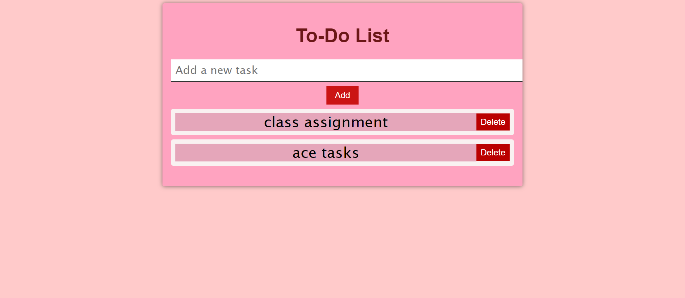
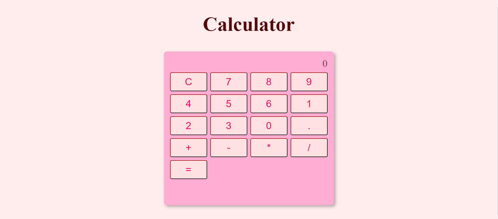

Project 1

This HTML, CSS, and JavaScript code creates an interactive quiz form. The form features five multiple-choice questions, each with radio button options. Users can select their answers and submit the form. The JavaScript function "calculateScore()" tallies the correct answers, and an alert displays the user's score upon submission. The code efficiently handles form validation and scoring. It employs clean HTML structure and CSS styling for readability and presentation. Overall, it provides an engaging and user-friendly quiz experience, making it a valuable tool for testing and assessment.
Project 2

This HTML, CSS and JavaScript code creates an elegant and functional To-Do List web application. The interface is well-designed with a centered container, allowing users to add tasks. Users input tasks in an input field, and clicking the "Add" button appends them to the list. Each task is displayed as a stylish item with a red delete button. The code effectively handles user input, prevents empty tasks, and enables task deletion with a click. It maintains a clean and responsive layout with a pleasing color scheme. Overall, it offers a user-friendly and visually appealing way to manage tasks and enhances productivity
Project 3

This HTML, CSS and JavaScript code snippet represents a professional-looking calculator web application. The calculator has a clean and user-friendly interface with a pink background and rounded edges. It supports basic arithmetic operations such as addition, subtraction, multiplication, and division, as well as decimal points. The display area at the top shows the current input and result. Users can input numbers by clicking on buttons, and operations are performed sequentially. The code maintains variables for the current result, the selected operation, and whether it's waiting for the next operand. It handles user input effectively, ensuring accurate calculations and a smooth user experience.